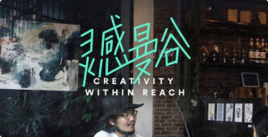
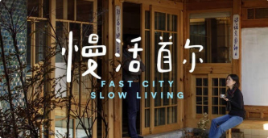
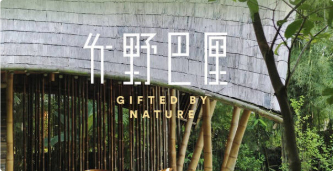

WEIJiJi
提供服务
威基基（WEJIJI）全球450万民宿任你挑,景点介绍、旅游游记、线路自助(拼盘)、旅游问答，都在威基基。
-

灵感触手可及
曼谷汇聚了很多年轻设计师、手工匠人、服装师，他们的创意在当地人的生活中随处可见——深藏于民巷的咖啡厅，老城的时尚买手店，新潮餐厅的装饰。在这里，你需要放慢脚步，时刻准备转角遇到惊喜。
-

夜色奏起蓝调
九州中心的福冈，它的夜晚不似东京喧闹，却因为历史上爵士乐的传入，衍生出独特的魅力。不论是在乐吧欣赏常驻歌手演出，还是在公园听随性的街头音乐，你都能感受到醇厚夜色中的一抹温柔。相比之下，名古屋的夜是年轻的、血液沸腾的狂欢。
-

怡然竹野中
“这里没有门，也不需要电扇，只有与自然完全相容的每一个顷刻瞬间”，在巴厘岛，还有很多时刻能让你感受到人与自然的共生。山林大海边的岛民，极好地利用着自然的丰盛，对天地万物的敬畏和感恩也流淌在他们的血液中。